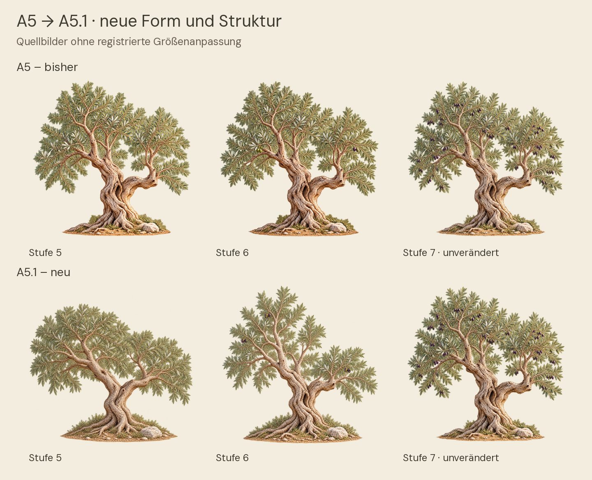
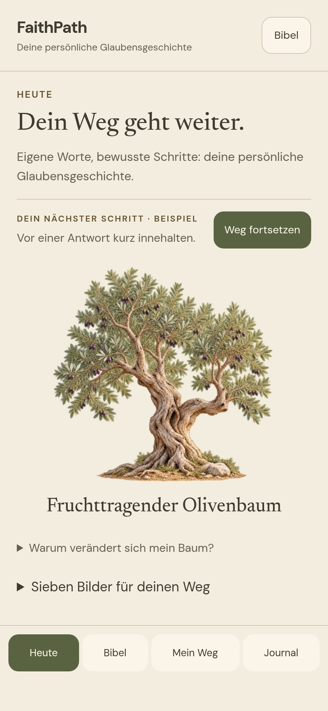
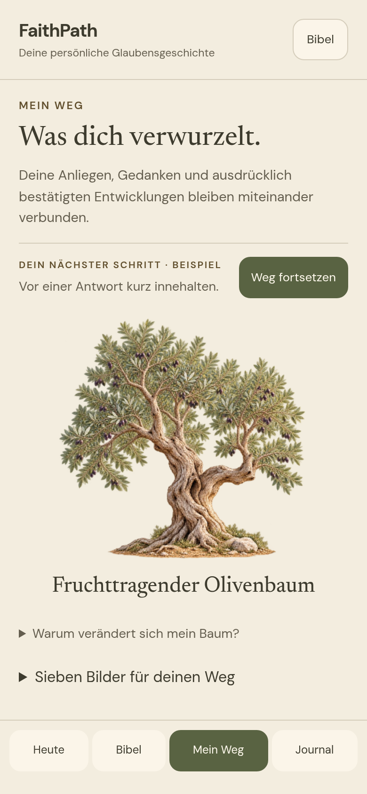
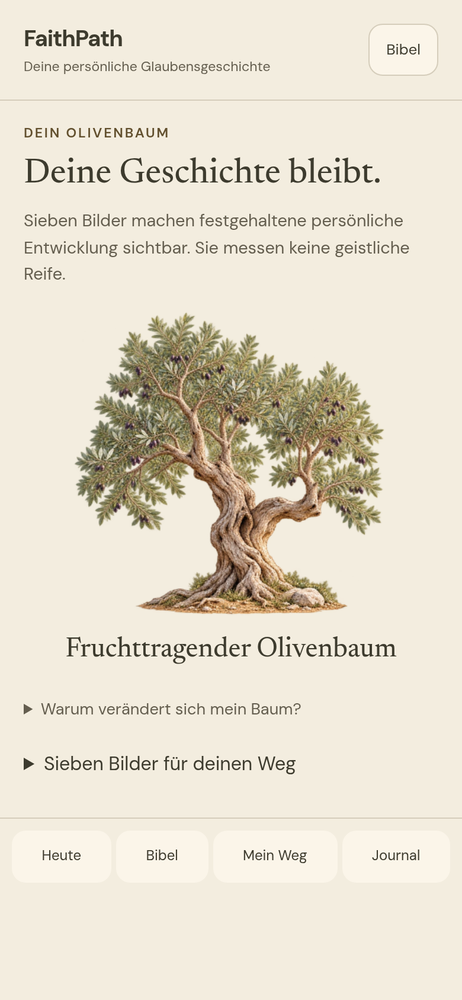
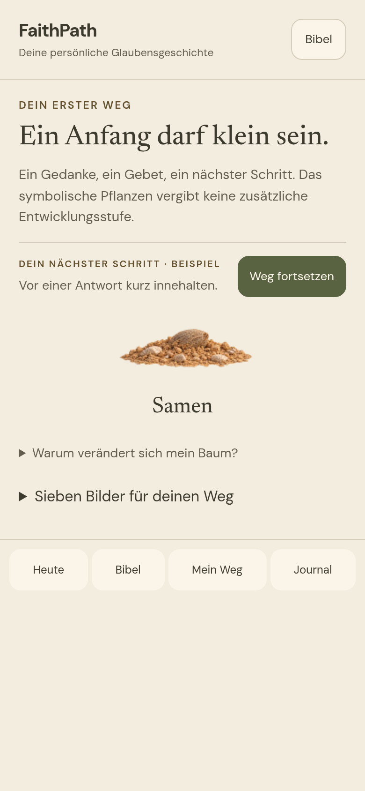
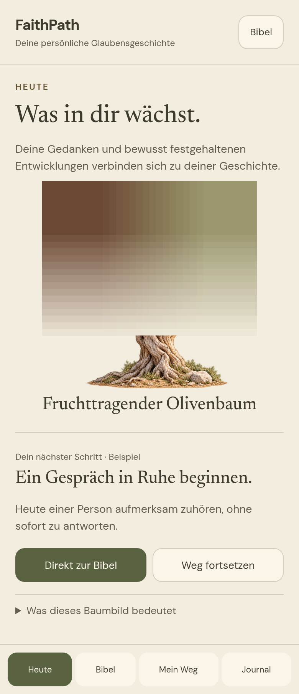

FaithPath A5.1 FINAL – Der lebendige Olivenbaum
Stand: 1. November 2026. Studie: FP-DESIGN-20261101-A51-FINAL-LIVING-TREE.
Die vollständige isolierte Baumstudie liegt zur einen gemeinsamen Designabnahme vor: sieben überarbeitete Lebensbilder, stärkerer lokaler Dauerwind, kurze Stufenwechsel, responsive Runtime-Dateien und nachvollziehbare technische Nachweise. Die echte FaithPath-App wurde nicht integriert oder veröffentlicht.
Arbeitsbranch: feature/olive-tree-a5-1-final-living-tree. Ausgangscommit: f3f19e118ceb0e54dda71f164f8da9a1578fff42. Geprüfter Implementierungscommit: 52d9e759095982ec125bf7dbcf9cc2e60c1a3f7c. Der abschließende Liefercommit steht zusätzlich in GIT_COMMIT.txt des Vorschaupakets; nach dem Implementierungscommit folgen ausschließlich Dokumentation, Nachweiswerkzeuge und Prüfmedien; die Runtime-Dateien bleiben unverändert.
Was sichtbar verändert wurde
Die bisherige Reihe zeigte zu früh einen alten Stamm und unterschied die letzten Stufen zu wenig. Sechs Illustrationen wurden anhand der tatsächlich vorhandenen Lichtkrone gezielt neu gezeichnet beziehungsweise generativ überarbeitet. Verwendete Referenzen und vollständige Bildprompts sind in prompts.json dokumentiert. Der freigegebene A4-Master von Stufe 7 wurde nicht verändert.
| Stufe | Neue Gestaltung |
|---|---|
| Samen | Kompakter brauner Olivenkern, teilweise im Boden; keine große mandelartige Schale |
| Keimling | Zarter gebogener Spross mit zwei jungen Blattpaaren und kleiner Spitze |
| Junger Baum | Schlanker, glatterer Stamm, erste lockere Äste, keine alte Stammhöhlung |
| Wachsender Baum | Kräftigerer S-Stamm, mehr Verzweigungen und deutlich größere Blattmasse |
| Starker Baum | Breite, niedrigere zusammenhängende Krone, kräftige Wurzeln, keine Früchte |
| Erste Früchte | Höhere linke Leittriebe, tiefer rechter Astbogen, veränderte Silhouette und wenige Fruchtgruppen |
| Fruchttragender Baum | Unveränderter A4-Master mit reifer Krone, Höhlung und reicheren Früchten |
Die Bilder sind als Familie erkennbar: gedrehter Stamm, hoher linker Aufbau, tiefer rechter Bogen, ähnliche Wurzel- und Bodenposition sowie mediterranes Silbergrün. Sie sind kein geometrisch identisches 3D-Skelett. Altersbedingte Astformen und kleine Registrierungsabweichungen bleiben sichtbar. Deshalb wird kein künstlicher Stammmorph eingesetzt.
Die Galerie zeigt alle Motive in 200-CSS-Pixel-Rahmen. Zusätzlich zu den wirklich neu gezeichneten Strukturen verwendet sie eine dokumentierte einheitliche Platzierung um den Wurzelanker. Die Quellbildansicht zeigt die unveränderten PNGs ohne Größenanpassung. Der direkte A5/A5.1-Vergleich der Stufen 5–7 liegt auch in dieser Quellansicht vor; der Unterschied beruht somit nicht allein auf Skalierung oder Fruchtanzahl.
Kritische künstlerische Einschätzung: Die junge Reihe und insbesondere die niedrige Krone von Stufe 5 sind klarer geworden. Die letzte Unterscheidung zwischen „erste“ und „reichere“ Früchte bleibt bei 200 Pixeln teilweise durch feine Fruchtdetails begrenzt; deshalb tragen auch Kronenform und sichtbare Namen die Orientierung. Die Blatttextur ist eine zusammenhängende Rasterillustration und enthält weiterhin ähnliche Blattfächer. Der Kern ist glaubwürdiger als zuvor, seine Erkennbarkeit als Olivenkern sollte im menschlichen Verständnistest bestätigt werden. Eine botanische Fachabnahme wurde nicht durchgeführt. Diese Grenzen werden nicht durch technische Testzahlen aufgehoben.
Dauerwind und Stufenwechsel
Sechs überlappende lokale Bewegungsfelder ersetzen die drei schwachen A5-Felder. Außen bewegt sich das Laub stärker, innen ruhiger. Unterschiedliche Phasen, Verzögerungen, mehrere Zeitverläufe und weiche Windimpulse vermeiden eine kurze gleichförmige Wackelschleife. Es gibt weder globale Kronenverschiebung noch Skalierungsanimation des gesamten Baums. Stamm, Wurzeln und definierte tragende Holzachsen bleiben fest; die zugehörigen Bildflächen wurden zusätzlich gerendert geprüft. Oliven und Zweige bleiben im selben kontinuierlichen Netz verbunden.
An opaken Blattpixeln des tatsächlichen Masters erreicht das reine Modell bei 200 CSS-Pixeln 6,69 Pixel außen und 3,36 Pixel innen. Die Messung erfasst eine 12-Quellpixel-Probenmatrix über 120 Sekunden in 250-ms-Schritten, keine optische Smartphone-Messung. Junge Stufen reagieren entsprechend geringer. Der Samen bewegt sich räumlich nicht und erhält lediglich eine sehr leichte Lichtänderung.
Die Animation läuft unbegrenzt bei Sichtbarkeit, Vordergrund und normaler Bewegungseinstellung. Außerhalb des sichtbaren Bereichs, nach Deaktivierung, im Hintergrund und beim Abbau endet die Schleife. Zurückkehrende Szenen laufen über 900 ms weich an. Reduced Motion zeigt das vollständige ruhende Bild. Die Qualitätsregelung verändert Auflösung, Netzdichte und Bildrate, nicht die sichtbare Auslenkung ab 200 Pixeln. Bei dauerhaft unzureichender Bildrate erscheint der vollständige statische Fallback.
Stufenwechsel verwenden eine getrennte 680-ms-Überblendung mit einer eingefrorenen alten Zeichnung und nativer Browseranimation. Kein zweiter Windloop, keine erfundene Wachstumsphysik, keine Änderung persönlicher Daten. Eine reine Darstellungswahl bestätigt keine Entwicklung. Die tatsächliche Windaufnahme und die Aufnahme aller sieben Wechsel liegen als MP4 vor. Der Vergleich zeigt links das unveränderte A5-Windmodell, rechts A5.1, beide im korrigierten gleichen Renderer, mit gleichem Bild, Theme und 280-CSS-Pixel-Rahmen. Er ist kein unverändert laufender historischer A5-Build.
Bestätigte Fehler und Korrekturen
| Befund | Nachgewiesene Ursache und Korrektur |
|---|---|
| Rechteck über der Krone | A5 initialisierte eine verborgene pausierte Szene mit clientWidth = 0, geklemmt auf 1; daraus entstand ein 2×2-Framebuffer. Nach dem Öffnen wurde vor der Größenkorrektur wegen Pause zurückgesprungen. Reproduktion und gespeicherter Farbblock stimmen im geprüften Ausschnitt exakt überein. A5.1 lädt verborgen nicht und korrigiert sichtbare Größe vor der Pausenentscheidung. |
| Scheinbar gleiche Endstufen | Nicht nur Fruchtanzahl, sondern niedrige/breite gegenüber höherer asymmetrischer Krone und veränderten Trieben neu gestaltet. Die menschliche gestalterische Entscheidung bleibt offen. |
| Zu schwacher Wind | Größere CSS-Pixel-Auslenkung, sechs lokale Felder, breiterer anatomischer Übergang und echter Bewegungssaum. Positive Netzflächen und vollständiges Neuzeichnen gegen Teilzeichnung geprüft. |
| 245/246 App-Tests | Die A5-Berichtstabelle nennt irrtümlich 246. Beide alten Protokolle sowie frische Baseline und Abschlusslauf melden 245 Tests, 245 bestanden, 0 übersprungen. Kein zusätzlicher Test zur künstlichen Erhöhung erzeugt. A5 bleibt als historischer Stand unverändert. |
| Grafikressourcen nach Fehler | Bei Fragment-Compilerfehler ging ein bereits erzeugter Vertex-Shader im bisherigen neuen Konstruktor verloren. Jetzt wird jeder Handle sofort registriert; beim Abbau wird das aktuelle Programm zusätzlich entbunden. Erzeugte und freigegebene Handles stimmen im Fehler- und Normalfall überein. |
| Pause gegen verspätetes Bild | Nach Pause konnte ein später fertig geladenes Bild eine Überblendung starten. Beide Übergangsgates beachten jetzt Pause. Rot-/Grün-Nachweis vorhanden. |
| Reduced-Motion-Rückkehr | Die alte verschobene Canvas-Pose konnte beim Wechsel aus dem ruhenden Bild sichtbar werden. Vor dem Einblenden wird jetzt die Ruhepose gezeichnet. Gerenderte Pixeldifferenz zur Ruheposition: 0. |
| Erneuter Versuch während Bildladen | Ein erneuter Grafikversuch konnte das noch offene Ready-Promise verwaisen lassen; ein Aufruf nach Abbau konnte ebenfalls offen bleiben. Laden behält nun sein vorhandenes Promise, Aufrufe nach Abbau liefern sofort false. Beide Fälle zuerst fehlgeschlagen, anschließend bestanden. |
| Nebenbefunde | Unsichtbare Bilder erhalten bereits vor dem Laden einen zugänglichen Namen; ungültige Kontextparameter fallen sicher auf „Heute“ zurück; Qualitätsdiagnosen sind auf 180 Einträge begrenzt. |
Mobile Darstellung und Zugänglichkeit
Heute, Mein Weg, Baumdetail und erster persönlicher Weg werden als ausdrücklich synthetische Kompositionen gezeigt. Die Galerie ersetzt keine echten App-Routen. Bibel und nächster persönlicher Schritt bleiben vor dem großen Motiv erreichbar. Stufenerklärungen sind aufklappbar. Bei 320 Pixeln und 200 % Schrift wird vertikal gescrollt; Schrift und Aktionen werden nicht zum Verbergen von Platzproblemen abgeschnitten oder verkleinert.
Geprüft wurden 320×568, 375×667, 390×844, 430×932, alle vier Themes, normale und 200-%-Textgröße: 224 Stufenlayouts und 128 Kontextlayouts. Dazu kommen vollständige Galerieansichten bei großer Schrift und ein Desktopvergleich. Echte Browser-PNGs zeigen sämtliche vier Kontexte bei 320 und 390 Pixeln in vier Themes. Sie wurden angesehen; die bekannte rechteckige Farbfläche ist in den neuen Ansichten nicht vorhanden.
Zwölf Axe-Scans melden keine automatisiert erkannten A/AA-Verstöße und keine unentschiedenen Prüfungen. Tastaturwahl, aufklappbare Bedeutung, Dialog und Fokusrückgabe wurden ausgeführt. Das ist keine vollständige WCAG-Zertifizierung und keine VoiceOver-Abnahme. Physische Safe Areas, Safari-Seitenzoom, echte Text-Automatik und tatsächliche Touch-/Hintergrundabläufe bleiben im Geräte-Gate offen.
Technische Nachweise
| Prüfung | Ergebnis | Beleg |
|---|---|---|
| Bestehende App-Unit-/Regressionstests | 245 bestanden, 0 Fehler/übersprungen | evidence/app-regression.log |
| Neue Modell-/Geometrie-/Policy-/Auswahltests | 10 bestanden | evidence/unit.log |
| Browser, Fehler, Stufenwechsel, Layout | 22 Gruppen bestanden | evidence/browser.json |
| Teilzeichnung gegen vollständige Zeichnung | 7 Stufen × 3 Qualitäten × 5 Posen, identische Pixel | Browserbericht |
| Netzfaltungen | Keine negativen/verschwindenden Dreiecke in geprüften 0–120-s-Zeitpunkten, allen Stufen und drei Netzdichten | Unit-Test |
| Geschütztes Tragholz | Alle geprüften Holzflächen unverändert; Samen erlaubt leichte RGB-Lichtänderung bei unverändertem Alpha | Browserbericht |
| Tatsächliche Bildschirmdarstellung | DOM-Aufnahmen gegen vollständigen statischen Fallback; bekannter 2×2-Fehler als absichtliche Testmutation erkannt | evidence/compositor-fidelity.json, Browserbericht |
| Größen-/Theme-/Textprüfung | 224 + 128 Layoutfälle ohne horizontalen Überlauf | Browserbericht |
| Accessibility | 12 Scans, 0 automatisiert gemeldete Verstöße | evidence/axe.json |
| Statische Analyse | Studie: 0 Fehler/0 Warnungen; App: 0 Fehler/5 unveränderte Warnungen | Lint-Protokolle |
| Datenverträge | Schema V5 und geschützte Verträge bestanden | evidence/data-contracts.log |
| Unveränderte Ausgangsdateien | Alle 4.770 Baseline-Dateien bytegleich, darunter App, Inhalte, Daten, Regeln, A4 und A5 | evidence/integrity.json |
| Wiederholter Assetexport | 24 Bild-/Metadatendateien bytegleich | evidence/reproducibility.json |
| Review | Drei Befunde behoben und unabhängig lesend nachgeprüft | evidence/review.json |
| Physische iPhone/Safari/VoiceOver/Energie | OFFEN | IPHONE_ABNAHME.md |
| Produktbuild, App-PWA-Update und App-Integration | Nicht ausgeführt; bewusst außerhalb dieses Design-Gates | Unveränderte App-Dateien |
Bei der Bildschirm-Fidelität unterscheiden sich die Grafikauflösung mit maximal DPR 1,5 und der native Bildfallback bei DPR 2 leicht durch Abtastung. Die mittlere RGB-Abweichung liegt je Stufe zwischen rund 0,56 und 3,55/255; nach identischer 100×100-Strukturabtastung unter 0,62/255. Das ist keine behauptete Pixelgleichheit zwischen Canvas und DOM. Die absichtliche 2×2-Mutation erreicht dagegen rund 50,94/255 Strukturabweichung und wird vom selben Prüfweg verworfen. WebP-Alphawerte sind exakt; RGB ist bewusst verlustbehaftet.
Performance und Bildbudget
Messumgebung: Linux, Headless Chromium 151, ANGLE/SwiftShader-Softwaregrafik, 390×844, DPR 2, jeweils eine aktive Szene, keine parallele Videoaufnahme. Gemessen wurden echte verstrichene Zeit und Grafikübermittlungen; keine Seek-/Inspect-Posen. Die Diagnosebilder bei 10/30/120 Sekunden sind echte Laufzeitprüfpunkte.
| Fall | Dauer | Übermittelte Frames/s | Framebuffer | JS-Übermittlung p95 |
|---|---|---|---|---|
| A5.1, 280 CSS-Pixel | 120 s | 30,00 | 456×456 | 0,10 ms |
| A5.1, 200 CSS-Pixel | 30 s | 30,00 | 336×336 | 0,20 ms |
| Unverändertes A5, 280 CSS-Pixel | 30 s | 30,00 | 490×490 | 0,10 ms |
Diese Werte sind keine gemessenen präsentierten Smartphone-FPS. 30 fps sind das gesetzte wirtschaftliche Oberlimit; 60 fps werden nicht behauptet. Die Neuzeichnung betrifft im reifen Baum etwa 80 % der Zeichenfläche. Der größere Bewegungsbereich benötigt mehr Fläche als A5; eine grundsätzliche GPU- oder Energieeinsparung ist damit nicht belegt.
Der Software-GPU-Prozess verbrauchte im 120-s-Lauf 62,82 CPU-Sekunden. Das ist Software-Renderer-Arbeit auf diesem Rechner, keine GPU-Auslastung oder iPhone-Akkumessung. Der gemessene JS-Heap sank im selben Lauf von 4,99 auf 4,19 MB; dies schließt langfristige Lecks nicht aus. In den anschließenden vier Sekunden außerhalb der Sichtbarkeit kamen jeweils 0 Frames hinzu, ohne ausstehenden RAF und ohne zusätzliche CPU-Zeit des Software-GPU-Prozesses. Rohdaten und alle weiteren Zähler stehen in evidence/performance-live.json.
21 responsive WebPs mit 384/640/1024 Pixeln umfassen zusammen 4.795.470 Bytes. Der normale sichtbare reife Baum lädt eine 640-Pixel-Datei mit 251.300 Bytes. A5 konnte für dieselbe reife Szene ungefähr 3,6 MB für drei Bilddateien anfordern. Bildladen verwendet eine passende Variante; weitere Varianten nur bei Fehler. Bilder sind nach Inhalt benannt und werden vor atomarer Veröffentlichung geprüft.
Der Export verwendet Qualitätsstufe 94, verlustloses Alpha und vormultiplizierte Größenberechnung gegen Randhalos. Der schlechteste gemessene Premultiplied-RGB-PSNR beträgt rund 37,05 dB. Der PNG-Master von Stufe 7 bleibt bytegleich mit SHA-256 eb1294571c0b57c0ae17e7b8064d4b6e428729ea79ddbbae46fcf46578987e3d.
Wartbarkeit, Datenschutz und Integrationsgrenze
Bilddaten, Geometrie, Windmodell, Renderer, RAF-Uhr, Qualitätsregelung, Ladeverwaltung, kurze Übergänge und Szenenlebenszyklus sind getrennte ES-Module. Es gibt keine neue Runtime-Bibliothek und keinen Frameworkwechsel. ARCHITEKTUR.md dokumentiert Schnittstellen, Fehlerregeln, Lazy-Loading-Promises und Wiederholung der Prüfungen.
Die Galerie nutzt ausschließlich synthetische Texte, lokale Bilder und lokale Newsreader-/DM-Sans-Schriften mit beigefügten OFL-Lizenzen. Keine externen Requests, Tracker, Cloudpflicht, persönlichen Logs oder Speicherzugriffe wurden in der Browserprüfung festgestellt. Sie kennt kein FaithPath-Nutzerdatenmodell.
Die echten Schwellen bleiben 0, 1, 2, 3–4, 5–6, 7–9 und ab 10 ausdrücklich bestätigte Entwicklungen. Alle bisherigen Bedeutungen, LocalStorage-Schlüssel, Backups, IDs, Bibel- und Quizdateien bleiben unverändert. Der Baum bewertet weder Glauben noch Gottes Nähe oder menschlichen Wert.
Das vollständige Vorschaupaket enthält absichtlich Quellen und Prüfmedien. Es darf nicht vollständig in den späteren PWA-Cache kopiert werden. runtime-allowlist.json enthält nur optimierte Laufzeitbilder. Der vorhandene App-Build übernimmt design/ nicht; er wurde nicht verändert oder ausgeführt. Ein echtes App-Update, Datenwiederherstellung mit neuem Baum und Offline-Precaching müssen nach gesonderter Integrationsfreigabe geprüft werden.
Verbleibende Grenzen und Entscheidung
1. Die gestalterische Qualität und die Wahrnehmbarkeit auf normalen Smartphones benötigen die gemeinsame menschliche Designentscheidung. Keine erfundenen Qualitätsnoten oder Testpersonenresultate. 2. Lokale zweidimensionale Bildverformung, keine einzeln simulierten Blätter oder tatsächliche Wachstumsphysik. Die saubere Überblendung ist eine bewusste Alternative zum unzuverlässigen Morph. 3. Firefox und WebKit wurden für diese Studie nicht ausgeführt. Echte Safari/iPhone/VoiceOver-, Temperatur- und Akkutests sind offen. 4. Varianten werden beim Laden gewählt, nicht während jedes Resize hochgeladen. Für die aktuelle 280-Pixel-Maximaldarstellung genügt dies; ein späterer großer Vollbildbaum benötigt gegebenenfalls eine gezielte Variantenaktualisierung. 5. Die ruhende Illustration ist bei 200-%-Textgröße weiterhin erreichbar; sie muss auf kleinen Bildschirmen durch Scrollen erreicht werden. Bibel und persönlicher nächster Schritt bleiben davor.
Empfehlung: BEREIT FÜR DIE GEMEINSAME DESIGNABNAHME, mit offenem Geräte-Gate. Die technisch geprüfte Vorschau ist vollständig geliefert. Keine App-Integration, kein Merge und keine Veröffentlichung sind damit freigegeben. Nach dieser Lieferung STOP bis zur ausdrücklichen Entscheidung des Auftraggebers.
Die visuellen Ergebnisse


35 Sekunden echter Bewegungsvergleich
A5-Windmodell links, A5.1 rechts. Gleicher korrigierter Renderer, gleicher A4-Master, Papier-Theme und 280-CSS-Pixel-Rahmen. Keine nachgestellte Bildfolge.
Video separat öffnen · Alle sieben Stufen und Übergänge – echte mobile Browseraufnahme
Mobile Kontexte – echte Browseraufnahmen








Renderfehler nachvollziehen


Die Diagnoseaufnahme „A51-intentional-2px-test.png“ ist eine absichtlich fehlerhafte Testmutation und keine finale Vorschau.